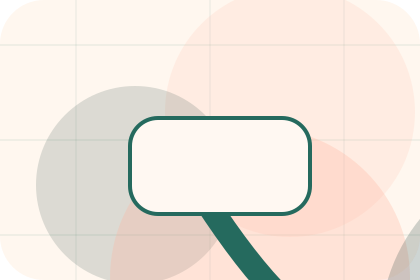
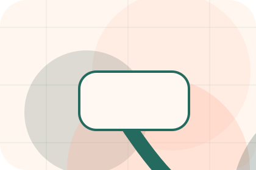
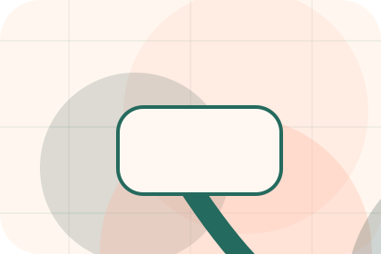
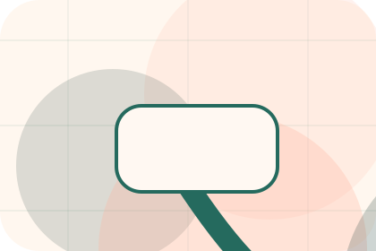
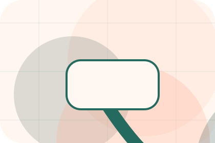
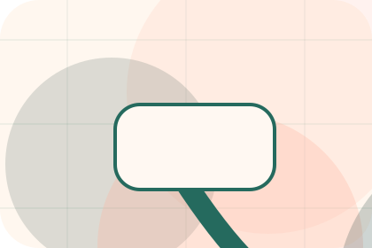
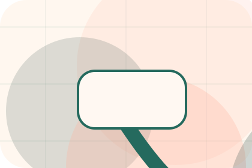
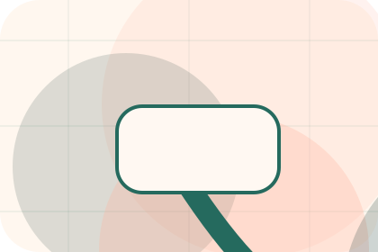

Home / 01
Paw
A veterinary site with warm urgent-care modules, appointment paths, team proof, and symptom routing
Home opens as a clear pets decision hub: what Paw offers, who it helps, why it matters, and which route to take first.
The first screen combines positioning, proof, primary action, and fast internal navigation, so people can act immediately or compare the rest of the home route with context.
Clear intakeHuman follow-upPractical reassurance
Warm appointment hero
Route the care need
Select the closest route and Paw keeps the next step, proof, and follow-up expectation aligned with care and quick triage.

Site atlas
Every route through Paw
This homepage is the working index for pets, animals & veterinary services: it explains the offer, points to every deeper page, and keeps the final action visible without making the visitor hunt.
A veterinary site with warm urgent-care modules, appointment paths, team proof, and symptom routing. The page links problem, promise, services, process, proof, questions, support, legal routes, and conversion paths into one clear decision map.
Clinic
Open the clinic route for values, facilities, standards so pets, animals & veterinary services visitors can compare context, proof, and next steps.
Open ClinicServices
Open the services route for checkups, vaccines, dental so pets, animals & veterinary services visitors can compare context, proof, and next steps.
Open ServicesCare
Open the care route for prevention, nutrition, behaviour so pets, animals & veterinary services visitors can compare context, proof, and next steps.
Open CareTeam
Open the team route for vets, nurses, specialists so pets, animals & veterinary services visitors can compare context, proof, and next steps.
Open TeamPricing
Open the pricing route for consults, procedures, packages so pets, animals & veterinary services visitors can compare context, proof, and next steps.
Open PricingEmergency
Open the emergency route for symptoms, steps, call so pets, animals & veterinary services visitors can compare context, proof, and next steps.
Open EmergencyResources
Open the resources route for guides, aftercare, prevention so pets, animals & veterinary services visitors can compare context, proof, and next steps.
Open ResourcesFAQ
Open the faq route for appointments, vaccines, surgery so pets, animals & veterinary services visitors can compare context, proof, and next steps.
Open FAQContact
Open the contact route for booking, phone, whatsapp so pets, animals & veterinary services visitors can compare context, proof, and next steps.
Open ContactAsset System
Review the local assets, icons, OG images, and static handoff materials used by Paw.
Open Asset SystemSitemap
Use the full sitemap to recover any route and verify the whole Paw structure.
Open SitemapPrivacy
Read the privacy route before sending personal details through the static form.
Open PrivacyCookies
Manage consent and understand the privacy-safe analytics approach.
Open CookiesHome / 02
Concern
Concern adds care context to the home route, using the modern clinic care flow structure to support care and quick triage before visitors choose a next step.
Paw uses rounded care cards and focused copy to make the decision easier to scan, aligning the section with care and quick triage rather than filling space.
Open Clinic
Context
Concern gives the page a specific angle instead of repeating the navigation label.

Judgment
The rounded care cards show what to compare, what to avoid, and what matters most for pets, animals & veterinary services visitors.

Direction
The final cue points to a useful internal route so the section keeps the journey moving.
Home / 03
Promise
Promise defines the better state Paw is built to create, with enough detail to make the promise believable.
A veterinary site with warm urgent-care modules, appointment paths, team proof, and symptom routing. The section grounds that direction in concrete benefits, visible tradeoffs, and a next route visitors can use when the promise feels relevant.
Open ServicesBetter State
Promise defines what becomes clearer, easier, or safer when Paw is the chosen route.
Home / 04
Services
Services explains the practical scope, best-fit situations, and expected outcome so pets visitors can compare options without decoding jargon.
The section keeps the offer concrete: what is included, who it is best for, what decision it supports, and which linked route gives the deeper detail.
Open ServicesBest Fit
Who should use services and when it belongs in the home journey.

What Changes
The practical benefit visitors should expect after choosing this route.
Deeper Route
Where to compare details, pricing, support, or contact options before committing.
Warm appointment hero
Route the care need
Select the closest route and Paw keeps the next step, proof, and follow-up expectation aligned with care and quick triage.
Home / 05
Emergency
Emergency makes the contact path concrete: what to send, how the response works, and what Paw needs before visitors book a visit.
The section reduces contact friction by naming the channel, expected detail, privacy path, and response expectation instead of dropping visitors into a generic form.
Open Team- 01
Details
What information helps Paw respond with a useful answer instead of a generic reply.
- 02
Timing
How the visitor should think about response, urgency, location, or availability.
- 03
Reply
The expected next message keeps scope, timing, and the first practical step clear.
Home / 06
Team
Team introduces the people, roles, or specialist credibility behind Paw so the decision feels less anonymous.
The copy ties names, roles, credentials, or availability back to the decision on the page instead of treating profiles as decorative biographies.
Open PricingRole
The person, team, or specialist function connected to team is easy to understand.
Credibility
Credentials, responsibilities, or availability are tied to the visitor's decision, not listed for decoration.
Handoff
The section explains how to move from profile interest to a practical conversation or booking path.
Home / 07
Reviews
Reviews converts customer proof into a useful buying signal: the problem, the experience, and what changed afterward.
Proof stays believable by focusing on situation, service experience, and practical change rather than vague praise or unsupported results.
Open Emergency
Situation
What the visitor needed before choosing Paw, written with enough context to feel real.
Home / 08
Trust
Trust gives the proof layer for home: standards, evidence, and reassurance that make the next decision feel grounded.
Instead of relying on vague claims, Paw presents visible standards, process cues, and proof artifacts that help pets visitors judge fit.
Open ResourcesEvidence
Visible proof that helps visitors believe the claims behind trust.
Standard
The quality, safety, or operating expectation this section makes explicit.
Reassurance
What becomes clearer before someone decides whether to book a visit.
Home / 09
Questions
Questions handles buying doubts directly so visitors can understand timing, fit, limits, and the safest next step.
Answers are short by design: enough to remove hesitation, not so much that the page turns into documentation before the visitor can act.
Open Contact
Question
Questions gives the page a specific angle instead of repeating the navigation label.

Answer
The rounded care cards show what to compare, what to avoid, and what matters most for pets, animals & veterinary services visitors.

Next Step
The final cue points to a useful internal route so the section keeps the journey moving.
What happens first?
Paw starts with a focused intake so the recommendation matches the visitor's context, risk, timing, and readiness.
How is scope kept clear?
Each route explains inclusions, exclusions, documents, timing, and the decision points that affect final delivery.
How is this site different?
The theme uses modern clinic care flow, rounded care cards, and emergency symptom helper, appointment form, care guide filter rather than a shared template rhythm.
Warm appointment hero
Route the care need
Select the closest route and Paw keeps the next step, proof, and follow-up expectation aligned with care and quick triage.
Home / 10
Book Visit
Paw closes the home route with a clear action, a quick reminder of the value, and a low-friction way to book a visit.
Visitors who are ready can use the primary action. Visitors who are still comparing can scan the section links, proof, and support routes before they book a visit.
Book VisitThe final block keeps the choice simple: act now, compare one more proof route, or send enough detail for a focused response.
Book Visitcare and quick triage
Book Visit
A veterinary site with warm urgent-care modules, appointment paths, team proof, and symptom routing. Home ends with a direct path to book a visit, plus enough context for visitors who still need to compare.
 Book Visit
Book Visit